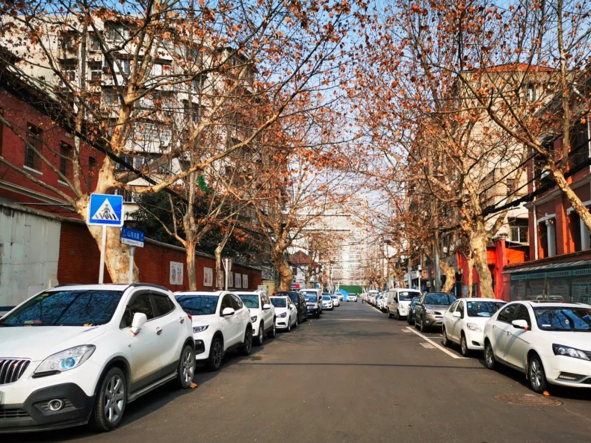

疫情日记 | 武汉封城的第四十四天
原文链接 备份链接 后天是三八妇女节，单位今年没安排线下活动，改成微信公众号推送在岗女工风采。去年请了美院老师，教女员工画画，还发了两张电影票。绘画活动我印象特别深刻，活动当天穿的黑西装，领口沾了丙烯颜料，刷老半天刷不掉，最后在网上搜的偏 …

我是记者郭静。
认识李慧赐，其实是通过她的朋友圈。她在街道工作，一次很间接的工作关系，加了她的微信。她喜欢在朋友圈里记录自己工作中遇到的人或事，那些小得意、小确幸、小吐槽、小失落，都像极了她这个年龄的小女生。但是，偶尔，那些三言两语、掐头去尾的表述，又能让你感受到这段特殊时期那些不同寻常的沉重。
我在想，这个在街道工作的女孩，经历了什么？身处街道、社区这个防控疫情蔓延的第一道防线，她一定遇到了她这个年纪难以承受的东西。
正是因为这，有了这次长谈。
1
去的时候是为了御寒，回来的时候是抵抗病毒
我叫李慧赐，今年27岁。2017年的时候，我通过省考进入我从小读书长大的永清街道，成为了一名基层公务员。
近几年在街道工作的年轻人越来越多，我一开始也是抱着很大的热情来的。我现在工作的地方，就是我从小长大的地方，对这里很有感情。
12月31号那天，我们在“武汉天地”做“跨年音乐节”。那个时候新闻已经报道出来，有两例不明原因的肺炎。那天我们要参加“跨年音乐节”的值守，我记得我还从家里把口罩带去给每个同事发了一个，当时别人还开玩笑，说我不要制造恐慌。
然后1月14号，我就开始休假了，去哈尔滨玩了一趟，和闺蜜一起。就是这几天，好像武汉就发生了比较大的变化。15号之前说的是不会人传人，15号之后说的是“有限人传人”，紧接着这个数字就慢慢递增。
18号，我们在宾馆看了数字，有点恐怖，具体多少我不记得了。我就跟闺蜜说，我们到了机场，飞机一降落，就要把口罩戴上。
我们去的时候其实戴了口罩的，但那是为了御寒。等回来的时候，它的作用就是抵抗病毒了。
19号回来那天，我特地让爸爸开车把我们从机场接回家，不是搭地铁。
口罩，我也囤了。但先开始4块钱一个的N95我还嫌贵了，只买了两盒。有一个很大的变化，中午，一个账号限购5盒，下午，我再登账号一看，就限购2盒了。那个时候才意识到，可能事情真的有变化了，不是我之前想的那么简单。
所以那天，我又拿我自己和我爸妈的账号，一人又买了2盒。大概21号的时候收了一批，22号的时候又收了一批。这几批里，好几盒都是2017年产的，我觉得年份太长了；还有一盒，因为当时刚好下雨了，它的外包装被打湿了，所以当时我给京东打电话，反映这个问题。我记得客服当时说了一个话，让我很感动。她说，因为现在非常时期，可能确实没办法帮我调日期近一点的。但污染确实是他们的问题，她会想办法再给我寄两盒，那两盒不用换，“您就自己留着用，因为现在口罩也是非常紧缺的物品”，然后，她说，“武汉，加油！”
当时我没忍住，就哭出来了。
这是我第一次感受到来自陌生人的关心，关于这件事上，来自陌生人的关心。
**2
**
突然就“封城”了
到22号的时候，感染的数量好像一下子就上去了。我当时压力很大，我们被要求到各个社区去了解情况，要做好相关的保障工作。
当时突然一下我才意识到，我们的工作状态发生了变化。
正常的话，除夕这天我们放假，但是23号这天早上，突然就“封城”了。那天应该是早上发的通知。我那天早上起得比较早，然后就看到微博上面说，武汉“封城”了。在我有限的认知当中，这好像是第一次发生这种事情。
我那天记得很清楚，我们要求马上张贴“封城”的通知出去。除夕的头一天晚上，我们七点多钟的时候还在外面贴“居民告知书”。
那个时候是刚开始，大家对于未知的东西是非常恐惧的，也不知道该怎么处理，所以“封城”第一天，我们就已经建立起了“战时”状态。要了解你这个辖区到底有多少人感染，已经要进行这种排查了。但那时候的排查，可能更多的是别人主动上报，跟现在这种全面排查还是有一定区别的，那个时候是一种被动式的吧。
然后，就到了初一。
我们群里面一直在发工作消息，比如说要上报什么信息。“战时”状态，我是负责宣传的，同时我也需要下沉到社区里面去。我们是初二就到单位了，就休息了除夕和初一。初二的时候就开始通知，恢复正常的上班状态，取消所有的休假。
那段时间我状态不太好，就觉得，好不容易忙了一整年，国庆就没有休，之后是军运会，然后一下子春节又失去了，当时是非常沮丧的一个状态。
现在回想一下，可能那个时候都没有意识到这个事情会战线如此的长，形势如此的严峻。
以前我们是在街道的办公室里面上班，现在我们要到社区里面去进行防疫工作，这些都是以前没有经历过的。最开始的时候，我们每天上午都得给体温异常的人打电话。那个时候特别压抑。因为那个时候床位是很紧张的，居民一个电话打过来可能要通话半个小时，因为这半个小时之内，你需要花大量的时间去安抚他的情绪。你明明知道他已经发热了，你也为他上报了他需要住院这样一个需求，但因为没有床位下来。所以这段时间，感觉非常难受。
3
我承载不了她的“谢谢”
一开始我身边的同学都觉得很莫名其妙，现在都这么危险了，为什么你们还要出去上班？
其实我倒还好，但是我妈比较担心，说你出去万一被传染了怎么办？我爸不是这样想的，我爸就觉得，你就是做这个事情的，你不去谁去。
我自己也比较中立，我们单位没有一个同事退缩，大家都在，怕什么呢。
我记得我爸爸给我做了很丰盛的早点，每天送我去上班。
因为父母的这种意识比较强，所以一定程度上是对我的一种保护。
在这段时间里面，我值了四次夜班，其中有三件事情给我印象很深刻。
是哪一天，突然大家都一起打开窗户，唱国歌？对，初五，就是那天。那天值夜班的时候，朋友圈被刷屏了，大家都在发对面小区唱歌的视频。我就跟他们不一样了。我在一楼值班，有一个人从我窗户旁边经过的时候对着我唱歌。我当时就觉得，我的待遇还挺特别的，其实当时这也算是在烦闷的工作中给自己找点乐子。那个时候武汉人的心理状态，还只是关了几天，大家有点憋着了。
第三次值夜班，我记得很清楚，2月12号晚上，这个事情对我打击特别大。
那天晚上我突然接到一个电话，说一个小朋友，5岁，他父亲是个博士，15号的时候从上海回武汉，17号的时候，人觉得不舒服，好不容易后来得到入院治疗的机会了，很可惜去世了，38岁。
他的妻子，就是小孩的妈妈，跟他爸爸告别的时候去了一次医院，因为那一次的接触，也被感染了。
小朋友本来寄养在他表姑的家里，但是因为他的父母都感染了，别人就担心小朋友会不会也受到影响，所以当时他们打电话来要求街道赶紧给小朋友做体检。
然后我们第二天紧急联系了医院，还好，这个小孩拍片子没事。
他的表姑，因为也有自己的孩子，担心自己家庭也受到影响。当时小孩的妈妈一晚上给我们打了好几个电话，说一定要管管她的孩子。她在医院被治疗，没有人带孩子的话，她怕出问题。
我们多方沟通，给他们想办法。后来建议，放回到宜昌的姥爷家里去。
你知道，当时已经封路了，我们这边各种想办法，后来协调了司法局两个干警，开警车把小朋友连夜送到了宜昌。我们跟宜昌那边沟通衔接好，宜昌那边还专门派了儿童医院的心理医生，还有救护车，在卡点那里等候。最后，小朋友是跟外公一起被隔离了。因为他出了武汉，需要被隔离，但是至少是跟外公在一起，能够得到一个妥善的照顾。
我回想到他妈妈跟我打电话的时候，即便在那样悲恸的一个状态之下，还是很克制、很有礼貌，还跟我说，“谢谢！”
我当时觉得，我没有办法去听这句“谢谢”，因为我觉得我应该去帮她解决她家小孩妥善安置的问题。我也承载不了她的“谢谢”，她的丈夫已经去世了，在这样的情况下，她还能这么有礼貌地请求我们去帮她完成她的诉求，我当时突然一下觉得，自己做的事情是有意义的事情，但是也觉得，非常难受。
因为那个值班电话是我接的嘛，怎么说呢，我一方面能够理解她的亲戚不愿意去照顾小朋友的这种担心，另一方面，那天晚上我又很着急，我一晚上都没有睡。
我当时见到小朋友一眼，他很乖，我们都没敢告诉他真实情况，他还以为妈妈是去加班去了，所以他一开始也特别不愿意回宜昌。后来是我们社区这边一直哄着小朋友，一直派安保队员陪着他。小朋友还给我招了招手，我就觉得，这么乖的小孩……
那之后，我跟在另外一个区的卫健委的同学聊，我说我一个小小的街道，在值夜班的时候就接到这种电话，我说你是怎么过的？他说，“你要知道电话另一头，是把所有生的希望都寄托在你这一端了，而你本身是一个没有任何医学背景的人，你给不了他任何帮助，你只能通过这种向上报送的方式，尽可能地给他安排住院”。
4
大家全凭一股劲在支撑着
我觉得那段时间内，可能很多人，尤其是在工作的人，会有这种应激创伤，每天的心情大起大落。当时微博上很流行的曲线图，就是每天心情的起伏变化，我们在上班过程当中感受尤其明显。
有时你会觉得，我们下面这么努力地在解决居民这些迫切需要救命的问题，但是突然，可能就打破了前期所有的努力。
比如说9号令，停私家车。当时要求一个社区三四台的士来满足整个辖区的运送要求，但没有区分是否能接送发热病人。这样其实是很危险的，因为你送发热的人去医院，他很可能就是确诊的患者，即便你的车经过了酒精消毒，再去满足居民生活的需求，这是不可能的。
我们第一时间就招到了志愿者。开始以为没有人会报名，没想到一天之内就接到了13个人报名，还有个在安陆的师傅，说自己可以连夜开车回武汉。他说他看到新闻报道，武汉人民太不容易了，想来贡献点力量。我们当时觉得，真的不只是我们在努力，即便网上有各种负面消息，还是好人多。
我觉得在这么长一段时间之内，给我支撑的是我们社区同事，还有街道同事，大家都坚守在自己的岗位上，可以说全凭一股劲在支撑着。
我们有一个书记，他是一个癌症患者。年前的时候，因为筹备联欢活动，他没有时间去买药。突然一下疫情爆发了，居民都来找他一个人，更没有时间，就面临断药的风险。即便是这个样子，他还是尽心尽力去服务每一个居民。
怎么说呢，那一瞬间，我觉得自己很惭愧。因为我可能做不到像他们那样把自己的健康暂时抛在脑后。那段时间，我一方面被我的同事们激励着，另一方面，又被网上的各种新闻影响着，情绪大起大落。
我最近的一次夜班，是2月22号，晚上8点以后，一个求救电话都没有了。整个晚上很安静，电话没有响过。
我们当时就觉得，事情越来越好了。
我们来了几拨志愿者，现在社区能够运转起来的一个原因，就是有越来越多的志愿者参与进来，人手充足了。
还有一点，就是大家互相理解。如果在团购群里面有居民提出来有什么意见的话，不是社区自己去解释，是其他业主，可能因为看到这一个多月以来社区为他们做的点点滴滴，凭良心说话，反而会劝提出不同意见的人。
**5
**
“应收尽收”之后，我整个人状态就变了
我的心情发生变化，是在“应收尽收”那一天。2月19号那一天，我们实现了“应收尽收”，五个“百分之百”嘛。
一开始大家是忙，并且苦恼、发愁，我明明已经上报了这个表格，已经填报了居民的信息，但还是没有床位空出来，没有办法送进去。到后面，方舱医院建起来之后，轻症和重症分开了，当天上报，当天就可以住院，这个是很能解决问题的。然后大家突然一下就觉得没有白费工夫，不用再看着别人病情恶化。
我觉得居民对我们真的是非常理解。我们那天晚上9点接到有床位空出来的电话后，就赶紧联系病人。因为想着居民去医院要排队，又回到社区，把自己的躺椅给他送过去，让他在医院能够有一个稍微落脚的地方。
这种细节其实对居民来说，是很能够获得他们的理解和“原谅”的。我在这里用这个“原谅”可能不太合适，但我们确实内心感到歉疚。居民对我们是理解的，他们知道床位不是你能够控制的，可能更因为这样，我们才更要想尽一切办法，让居民能够得到救治。大家都是想着，只要能够救人，抢赢这个时间就可以，很多时候没有想到自己的安危。
还有一次，方舱医院好像是晚上八点关门，我们有一个病人是晚上七点五十的时候接到通知过去的。路上的时候我们就接到电话，说不用去了，因为去了也关舱了。但我们当时就想着，如果今天不去的话，你把病人送回到隔离点，隔离点肯定也不收，一定要想办法把他送过去。志愿者师傅说，赶紧先把车开到那里再说。开到方舱门口，跟别人沟通，最后收进去了。很多时候你可能以为这件事情干不成，但是你多努力一下，最后的结果还是能够如愿的。
19号“应收尽收”之后，我整个人的状态就变了。因为辖区里面相对安全了一些，你身边不再会有住不了院的病人。
接下来的工作重点就是去保障民生了，大家现在更多想的是满足居民日常生活需要。
我昨天跟着志愿者一起去给居民买药，就碰到有的药没有。我们跟居民直接联系，涉及到换药或者怎么样，居民也都挺理解的。我觉得人和人之间这种信任还是很重要的。
现在很多问题不再像之前那样存在了两三天之后，它的解决方案才出来。这次很简单。像昨天去重症病房黄石路药店给重症病人买药，开始只有一个点，要排12个小时队才能买到。我们还没有把顾虑提出来，新的政策就出来了，一下子药房就开到50家了，重症药的点就多了。但是与此同时又会发现一个问题，它只把店名和地址写出来，没有写电话，那么可能我在去之前没有办法了解到，有没有我需要的这种药，到底去哪家购买？所以慢慢的，还是需要有更多完善的地方。但至少我觉得现在解决问题的速度是快了很多的，这点让大家更有干劲了。
这次也给我上了一课，很宝贵的一课。我以前从事人事工作，是比较流程性、琐碎性的事情，我只要在规定时间内完成，这个事情就过去了。现在我发现，岗位不分贵贱，真正灾难来临的时候，需要你知道该怎么去做，并且大家的心要齐，这样才能够在前期那么大困难的情况下，大家最后还是熬过来了。如果我自己不学无术去混日子的话，以后遇到这种突发情况，我也会手足无措，只能让百姓受苦。
6
这是我们离“英雄”这个词最近的一次
有些事情，就是你不能去计较，要去计较的话，那都是委屈，都是难处。如果你更多的看到它好的一面，或者你每天做的工作能够给你更大的收获，可能你能坚持得更久。
就像那天“应收尽收”之后，我们社区同志合影，我相信大家是发自内心觉得如释重负，终于完成了大目标，虽然后面还有更艰巨的、满足整个辖区所有居民需求这样一个工作等着我们，但至少这不是救命的问题了。
以前我们送病人的车辆，更多的是把他送到医院里面去；现在更多的是把病人接回来，出院。所以大家都很开心，都很有干劲。现在出院了之后不是还要再观察15天嘛，但是大家还是觉得相比过去一个床位好难等、要送几次才能把病人送进去，这些就不算什么了。是不是我们的包容性更强了？
其实说真的，小的时候在这里长大，跟社区打交道不多。那个时候社区给人的感觉是给你办户口，解决一些民生问题。这次疫情，是第一次把这种基层一线的角色变成了英雄的角色。
我不知道您能不能理解我这种说法，可能这是我们大家觉得离“英雄”这个词最近的一次。
很多人都觉得我做得不是最好的，他做得才更好，大家是这样一种想法。而不是说我去争名和利，这一点也是让我非常佩服的。
之前说2月20号要复工，我当时特别担心，因为“应收尽收”才搞完，你的感染率数字还是没有降下去，这个时候如果开工，一下子又会前功尽弃。
结果当天晚上就出了政策，说还要延期。虽然别人比我们又多休息了20天，但我是很开心的。我觉得只有这样，我们前期的努力才不会白费。我们愿意用我们自己所谓的辛苦，或者说用我们再多上一段时间的班，来换取大家能够有一天非常放心地走在街道上面。
我昨天拿防护服的时候，路过了江汉路步行街。我觉得很多事情你要换一个角度去想，虽然现在马路上空无一人，但是我爱好摄影，路过那里的时候我发现，以前我需要等行人走完之后才能拍下定格的瞬间，现在这个景色是留给我来欣赏的。虽然大家在家里困着不能出去，但是我能够替你去看这些，然后我把景色拍下来，你们能够看到这个城市还是这么美丽，大家只要再多坚持一下，等疫情完全消散，这些美丽的东西还是存在的。
口述时间：2020年2月24日
“我们经历着生活中突然降临的一切，毫无防备。”生命中不能承受之轻，用来形容这些天，是那样的贴切。
“时代的一粒灰，落到个人头上，就是一座山。”在突然被按下暂停键的危城武汉，既有个人的茫然无助，也有凡人的挺身而出。恐慌，痛苦，感伤，感动……灾难之下，再刚硬的人也变得柔软。
我们想通过十个人的讲述，记录这段历史，记录2020年这个春天的武汉。
策划：高岩、任捷
采访：郭静
编辑：杨宁
制作：单丹丹
新媒体：周文超
往期回顾：

原文链接 备份链接 后天是三八妇女节，单位今年没安排线下活动，改成微信公众号推送在岗女工风采。去年请了美院老师，教女员工画画，还发了两张电影票。绘画活动我印象特别深刻，活动当天穿的黑西装，领口沾了丙烯颜料，刷老半天刷不掉，最后在网上搜的偏 …
原文链接 备份链接 澎湃新闻记者 温潇潇 实习生 孟津津 武汉市江岸区江码社区火了。 2月22日晚，该社区下辖的滨江苑小区业主微信群里，一名女业主激动地连发数条语音，怒骂中百超市针对不同小区发布“AB阴阳套餐”，买米要搭配草纸和酱油，社区 …
原文链接 备份链接 家住温馨苑的黄新陷入了愁苦之中。她丈夫疑似新冠肺炎，高烧十天，无法进食。因为生病，丈夫有点消极，唉声叹气，虽然还没有检测确诊，但他觉得自己基本就是新冠肺炎了。黄新不敢跟外人说，同事们聊起天来，她也不敢出声。“你家有 …
原文链接 备份链接 他们理解小区被封，理解只能选择被塞了四大包汤圆的团购套餐，理解菜价成倍上涨，理解要继续忍受生活上的不便，才有可能早一点等来结束的一天。 文 | 谢婵 编辑 | 小豆 武汉伢王嘉兴给父母打电话，得知小区业主群里推荐 …
原文链接 备份链接 这篇文章写的是武汉玩家的故事，它显然不仅仅关于游戏。游戏作为一个精神载体和文化切面，它试图讲述更大的主题：在这场灾难中，我们也有好多次得以窥见一种更本质的人，以及对人类共同命运的指向；而无论是好是坏，我们终究在各种各样 …